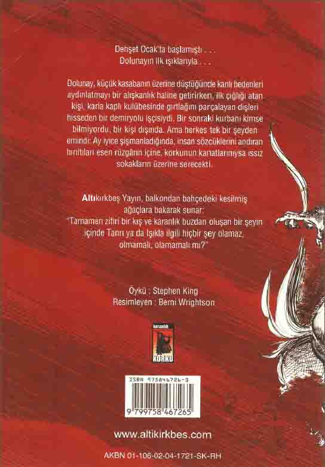

-ARKA KAPAK-
Dehşet Ocak’ta başlamıştı...
Dolunayın ilk ışıklarıyla ...
Dolunay, küçük kasabanın üzerine düştüğünde kanlı bedenleri aydınlatmayı bir alışkanlık haline getirirken, ilk çığlığı atan kişi, karla kaplı kulübesinde gırtlağını parçalayan dişleri hisseden bir demiryolu işçisiydi. Bir sonraki kurbanı kimse bilmiyordu, bir kişi dışında. Ama herkes tek bir şeyden emindi: Ay iyice şişmanladığında, insan sözcüklerini andıran hırıltıları esen rüzgârın içine, korkunun kanatlarınıysa ıssız sokakların üzerine serecekti.
Altıkırkbeş Yayın, balkondan bahçedeki kesilmiş ağaçlara bakarak sunar:
“Tamamen zifiri bir kış ve karanlık buzdan oluşan bir şeyin içinde Tanrı ya da Işıkla ilgili hiçbir şey olamaz, olmamalı, olamamalı mı?”
